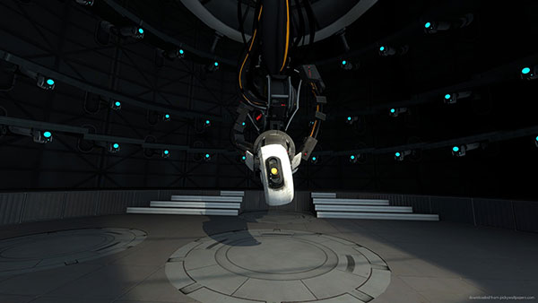
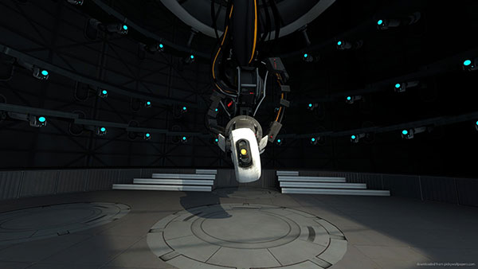

GLaDOS
Genetic Lifeform and Disk Operating System
GLaDOS is an artificial intelligence created by Aperture Laboratories and remains one of our greatest successes. She is the overseer of our celebrated Aperture Science Enrichment Center and cares for the well-being of our testing volunteers. As the most advanced aritificial intelligence in our age, the well-being of your friends and family are GLaDOS's number one priority.
GLaDOS v1.10 is currently responsible for handling Aperture Science's Enrichment Center Test Subject Application Process, while GLaDOS v3.11 oversees our vigorous testing and research processes.
GLaDOS's first iteration was constructed in 1986 with the intention of accelerating the Portal project. A prototype chassis for GLaDOS was constructed in 1989, but is currently not in use. In 1996, after a decade spent bringing the Disk Operating System parts to a state of more or less basic functionality, work began on the Genetic Lifeform component. CEO Cave Johnson originally intended to be the computer's Genetic Lifeform component. However, Johnson ultimately died before his consciousness could be uploaded into the system. He left instructions that his assistant Caroline should be fitted as the Genetic Lifeform component so that she would be able to run Aperture Laboratories in perpetuity after his death. Her consciousness remains to be the driving Genetic Lifeform component of the latest version of GLaDOS. Due to GLaDOS v3.11's wild success, Aperture Laboratories has been ridiculed with bogus, fantastic claims, particulary aimed at GLaDOS. These false claims are currently under investigation by the Federal Bureau of Investigation, with Black Mesa as the prime suspect for slander. Any rumours that GLaDOS attempted to kill Aperture Laboratories employees within "one sixteenth of a picosecond" and that GLaDOS released a deadly neuro-toxin on Aperture Laboratories's first ever bring-your-daughterto- work day after separate activations are outrageous and completely false. As a preventative measure only, our latest improvements on GLaDOS aim to alter GLaDOS' personality and curb her unfriendly tendencies by adding various Personality Cores to her system. These personality cores operate individually as well. One such personality core, called Wheatley, manages the personal well-being of testing volunteers to ensure safety and security for all.
For a personal experience with the latest GLaDOS, sign up to become a test subject at the Aperature Science Enrichment Center today! Remember, the well-being and safety of our dedicated volunteers is GLaDOS's number one priority.